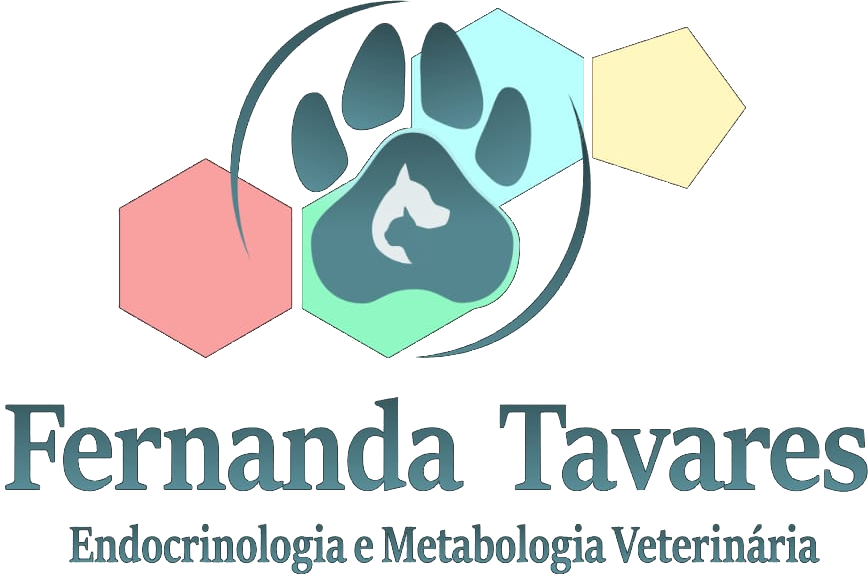
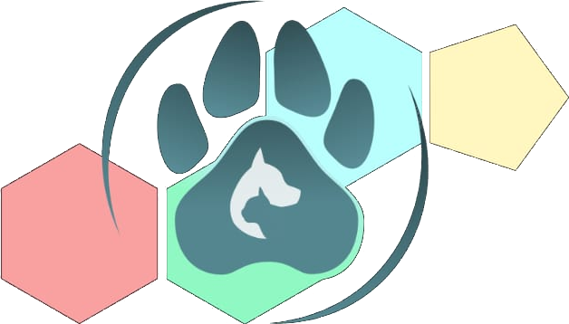

Diabetes mellitus
Cães e gatos
Uma das doenças hormonais mais comuns. Com o tratamento certo — insulina, dieta e monitoramento — o pet vive bem. Em gatos, a remissão é possível quando o controle é feito cedo e de perto.
Belo Horizonte e região metropolitana
Diagnóstico e acompanhamento especializado de diabetes, doenças da tireoide, síndrome de Cushing e outras alterações hormonais e metabólicas — com um plano feito sob medida para o seu pet e suporte de perto em cada etapa.

A especialidade
Os hormônios são mensageiros químicos que controlam praticamente tudo no organismo do seu pet: o açúcar no sangue, o peso, o metabolismo, a pele e os pelos, a pressão, a disposição e até o comportamento. Eles são produzidos por glândulas como o pâncreas, a tireoide, as adrenais e a hipófise.
Quando uma dessas glândulas produz hormônio de mais ou de menos, o corpo todo sente. A endocrinologia e metabologia veterinária é a área que investiga, diagnostica e trata esses desequilíbrios em cães e gatos.
São doenças, em geral, crônicas: exigem diagnóstico preciso, ajuste fino de doses e um acompanhamento próximo. É aí que o olhar de um especialista faz diferença — mais qualidade de vida para o pet e mais segurança para o tutor.
Fique atento
Muitos desses sinais aparecem devagar e são confundidos com “coisa da idade”. Se você notou um ou mais deles, vale investigar.
Pote de água esvaziando rápido, xixi em excesso ou fora do lugar.
Emagrece comendo bem, ou engorda sem comer mais.
Pede comida o tempo todo, ou passa a recusar.
Queda de pelo simétrica, pele fina, escurecida ou com feridas que não cicatrizam.
Abdômen aumentado, respiração ofegante em repouso, fraqueza muscular.
Letargia e intolerância ao frio — ou, nos gatos idosos, agitação e vômitos.
Principais condições atendidas
Cães e gatos
Uma das doenças hormonais mais comuns. Com o tratamento certo — insulina, dieta e monitoramento — o pet vive bem. Em gatos, a remissão é possível quando o controle é feito cedo e de perto.
Mais comum em cães
A tireoide trabalha devagar: ganho de peso, cansaço, intolerância ao frio e alterações de pele e pelo. Diagnóstico exige cuidado para não confundir com outras doenças.
Gatos idosos
Tireoide acelerada: o gato emagrece mesmo comendo muito, fica agitado, vomita e pode ter alterações no coração e nos rins.
Hiperadrenocorticismo
Excesso de cortisol: muita sede e fome, barriga pendular, queda de pelo e fraqueza. Uma das doenças hormonais mais frequentes em cães de meia-idade e idosos.
Hipoadrenocorticismo
Falta de hormônios das adrenais. Os sinais vão e vêm — vômitos, fraqueza, diarreia — e podem evoluir para uma crise grave. Reconhecer cedo salva vidas.
Cães e gatos
Excesso de peso aumenta o risco de diabetes, problemas articulares e outras doenças. Plano de emagrecimento seguro, com metas realistas e acompanhamento.
Paratireoides
Cálcio alto ou baixo no sangue pode ter origem hormonal e afetar rins, músculos e sistema nervoso. Investigação cuidadosa da causa.
Casos complexos
Acromegalia felina, insulinoma (hipoglicemia), diabetes difícil de controlar e alterações da hipófise, entre outras.
Como funciona
Você conta pelo WhatsApp o que está acontecendo e agendamos a consulta.
Conversa detalhada sobre o histórico, exame físico completo e análise dos exames que o pet já tem.
Quando necessário, exames hormonais e de imagem específicos — só os que realmente fazem diferença.
Plano individual, orientação prática (como aplicar insulina, medir glicemia, ajustar a dieta) e reavaliações periódicas.
Encaminhe seu paciente ou discuta o caso. O tutor continua com você — trabalhamos em parceria, com retorno sobre a conduta e a evolução.

Quem cuida do seu pet
Médica Veterinária · CRMV-MG 00000
Médica veterinária dedicada à endocrinologia e metabologia de cães e gatos, com atendimento em Belo Horizonte e região. Meu trabalho é olhar para o seu pet como um todo, entender a causa do desequilíbrio hormonal e construir com você um tratamento possível de seguir no dia a dia.
Sei que receber o diagnóstico de uma doença crônica assusta. Por isso, cada tutor sai da consulta sabendo exatamente o que fazer — e com um canal aberto para tirar dúvidas durante o tratamento.
Onde atendo
Atendimento para tutores de BH e cidades vizinhas. Fale comigo para confirmar o local e a disponibilidade de agenda para a sua região.
Dúvidas frequentes
É o médico veterinário que se dedica às doenças dos hormônios e do metabolismo de cães e gatos, como diabetes, alterações da tireoide, síndrome de Cushing, doença de Addison e obesidade. Ele investiga a causa, define o tratamento e faz o acompanhamento de perto, ajustando doses ao longo do tempo.
Não é obrigatório. Você pode agendar diretamente. Se o seu pet já tem um veterinário de confiança, o trabalho é feito em parceria com ele.
Tem, e o pet pode ter uma vida longa e com qualidade. O tratamento costuma envolver insulina, dieta adequada e monitoramento da glicose. Nos cães, geralmente é para a vida toda; nos gatos, a remissão é possível em muitos casos.
Sim. Em muitos gatos, com diagnóstico precoce, controle glicêmico adequado e dieta correta, a diabetes pode entrar em remissão e o gato deixar de precisar de insulina. Por isso o acompanhamento próximo nos primeiros meses é tão importante.
Aumento da sede e da quantidade de urina são sinais que merecem avaliação. Podem estar ligados a diabetes, síndrome de Cushing, doença renal, entre outras causas. Quanto antes investigar, melhor.
Todos os exames que o pet já fez (de sangue, urina e imagem), a lista de medicamentos e doses em uso, a ração/alimentação atual e, se tiver, anotações de glicemia ou de mudanças que você percebeu em casa.
Belo Horizonte e região metropolitana, incluindo Contagem, Betim, Nova Lima, Sabará, Santa Luzia, Lagoa Santa e Vespasiano. Fale pelo WhatsApp para confirmar a disponibilidade para a sua cidade.
Agende uma consulta ou tire suas dúvidas. Respondo pelo WhatsApp.